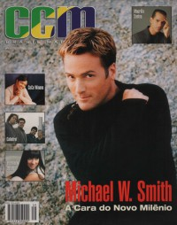

CMnexus
: Contemporary Christian culture, music, and media.
|
CCM Brasil2000, vol. 3, iss. 9
| Cover |
|---|
|  | | Writers in this Issue |
|---|
Brown, Bruce A.
Carlozo, Lou
Correia, Viviane
DeBarros, Anthony
Fernandez, Kika
Gouêva, Karina
Hernandes, Estevam
Machado, Hélio
Nentwig, Wendy Lee
Newcomb, Brian Quincy
Riddle, Melissa
Urbanski, Dave
|
Cover Feature:
- "Viagem No Tempo" by Wendy Lee Nentwig
Article:
- "O que diz o coração de Fernanda Brum" by Karina Gouêva
- "Uma Mulher Autêntica" by Melissa Riddle
- "Um novo tempo para Maurílio Santos" by Karina Gouêva
- "Quando o Coração se Quebra" by Melissa Riddle
- Cezar W. Elbert by Karina Gouêva
- "Catedral em nova fase" by Karina Gouêva
- "O Guitarrista que Virou Cantor" by Karina Gouêva
- "Em cima du muro?" by Brian Quincy Newcomb
Christian subculture
O que Rola:
- "Hora do Brincar" by Brian Quincy Newcomb
O que há de novo:O que há de novo Brasil:in concert:
- "Entrada no Novo Milênio a Milhão" by Karina Gouêva
pense nisso:
- "Derrame Sobre o Senhor Toda a Sua Expectativa de Vida" by Estevam Hernandes
|
|